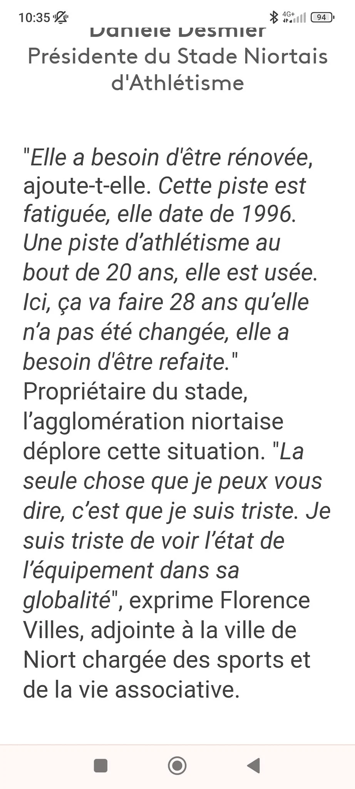

Prise de position fédérale
À Niort, défendre les équipements sportifs et les moyens pour le sport
Date indiquée par Facebook · 30 mai 2024
Repères éditoriaux
Le 30 mai, nous avons fait écho aux préoccupations des syndicats sur les moyens du sport scolaire et l’état du stade René-Gaillard. Notre publication interroge les choix de dépenses entourant le passage de la flamme olympique.
Texte conservé avec la publication
Comment ne pas partager l'indignation des organisations syndicales par rapport au coût faramineux du passage de la flammé olympique dans les #deuxsevres.
Il a beaucoup été question de l’héritage que laisseront les jeux Olympiques et Paralympiques.
Le principal syndicat des professeurs d'EPS dénonce pourtant une régression sportive du sport à l'école ainsi que le désert des installations sportives.
Et concernant la ville de Niort, dans une interview à France Bleu Poitou, l'adjointe au sport se disait "triste" de l'état de l'équipement du stade René Gaillard. Il n'y aurait pas d'argent pour entretenir un équipement sportif, mais il y en a pour faire passer la flamme, qui laissera des souvenirs dans les mémoires certes, mais aucun concernant un plus pour la pratique sportive.

Sources
Archive rouge · export Facebook · AR-0002-FB-01373
À lire aussi · Collèges ruraux. Le PCF 79 conteste les fermetures envisagées · Le lien d’origine